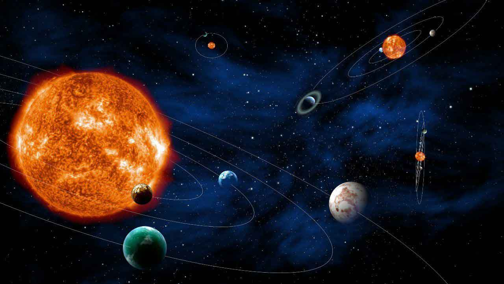

小薛谈生活 2021年9月16日

你有没有想过，我们从哪里来，人死后又会怎样，为什么我就是我而不是别人？这些问题至今没有一个人能肯定的解释。但人们对此都有猜想，比如佛教的六道轮回，他们将宇宙划分为六道：
即天神道、修罗道、畜牲道、饿鬼道、地狱道、人间道。也有人说人死如灯灭。而这位小伙的解释我觉得很有意义，他生来患有自闭症思想古怪且深隧，在对于生活的抱怨之时他总是沉思生命的原理，
久而久之他积攒了一些人生的经验，用悲观的心态写下了一本书籍：《悲剧与人生》。
在书中他强调人生就是悲剧，而且是无法解脱的悲剧。这是他书中的一处片段：
我认为意识派生了物质
你们乃至世间万物都是虚假的
我还认为，意识是不灭的
我认为人死后会同一性永恒轮回，即我死后会回到2001年，过着相同的命运，死亡后又是这样，永远循环，就像光碟放完重播一样。
如果你不信，我也没办法，我们彼此无法证实对方的观点，因为你不是我，我不是你。
我的最终目标是什么？是用权利解脱我的“悲剧”。说白了就是“君临天下”。
他还对上片段做了补充：
至于为什么我会处在这种窘境中？我也不明白。
我的猜想是：本来我在真实的世界中无忧无虑的过着，像神仙一样可以为所欲为。
但是，某天我被某种邪恶的力量捕获，被困在了这个空间。在这个空间里无限的循环着。
也许，我所感受到的一切都是幻象，这一切都是一场梦，无限轮回的梦。
以上片段中，“空间”是什么概念？作者小伙认为，空间就是次元的容器，和宇宙的关系是：宇宙→次元(多元宇宙)→空间，空间则是最大的分类。从上可以看出小伙认为，在这个苦难的空间外，还有着一个极度美好的，
顺风顺水的，充满温馨的，属于他自己和“爱”的快乐空间，他认为原本这两个空间不该有任何联系的。这个“爱”是什么意思呢，他不是物质亦不是精神，比物质和精神更高级，而且是被小伙守护的，比小伙地位高的唯一真爱。
“爱”是神圣的、是高尚的、是圣洁的，小伙对其有个称呼，他不予公布。
此外，小伙在书中提到，外界给他(灵魂)的五个感官信息是有限的，只要没有被他亲自感知到的事物都是没有正在发生的。比如，他在盯着墙上的画欣赏时，亲戚张三在千里外请朋友吃饭，但这时张三那边什么事都没有发生。
尽管张三饭后给小伙打电话说刚和朋友吃完饭。这一段时间，只有他看到的那幅画(视野)是真的。不太恰当的比喻：就像游戏中为了节省cpu负担，而不加载离玩家远的场景。这样一来，甚至小伙觉得他背后(视野外)的一律不存在，
这宇宙只存在他去过的地方。小伙说，一次他和他父亲辩论的时候，他父亲说自己有思想。这时小伙反驳道：“你以为你是一些‘程序’？，你只不过就是一段渲染后的视频。就像你梦见的人和你说话，其实就是你自己的想象”。
小伙感慨道：宇宙中，美好的主观经验一律不存在，我没经历过的好事是永远永远不能体验了。如果我过的比较好或平凡，这轮回还是可以接受的，可是这样的悲剧要重演无数次，一切悲剧终将无限的归来。
书中他说了一个论点：如果我能在一次轮回中打破轮回，那就证明我没有在轮回，否则这就不知道是第多少次轮回了。我很想知道我的起点是什么样，可是人三岁前不记事，同理我也很想知道我以后做没做能打破我轮回的事，可未来无法预测。
悲剧之处是我活在当下。
好了，这本书的介绍就这么多了，在它出版后引起了不少的欢迎，很多人都被小伙的悲观震撼到。虽然有很多人反驳他的观点，但你看看这本书也不会后悔的，喜欢就关注我哦。